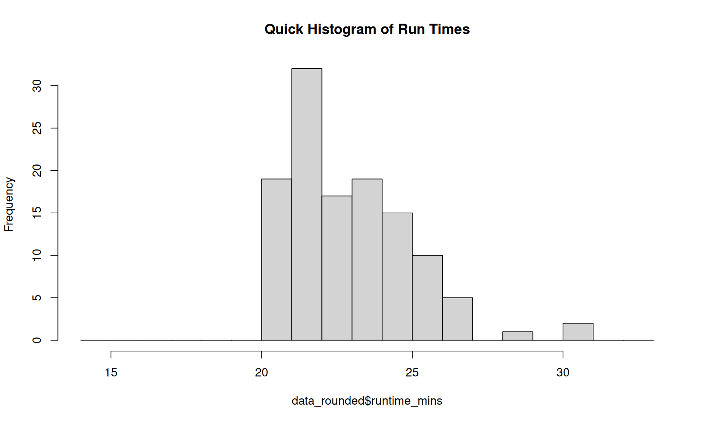
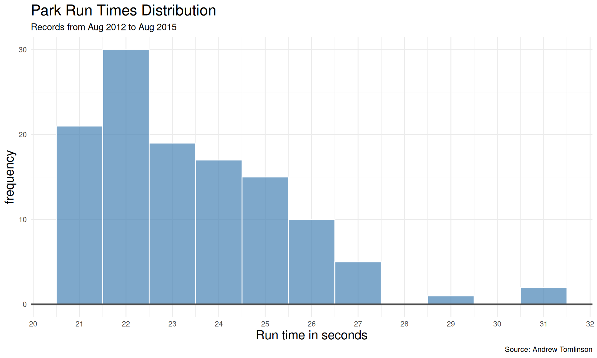
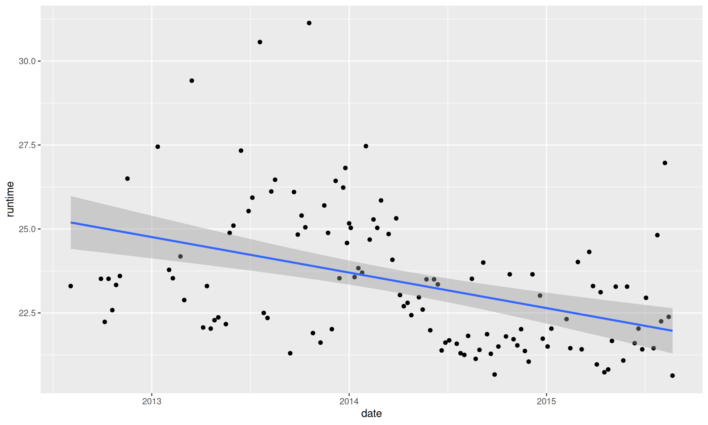
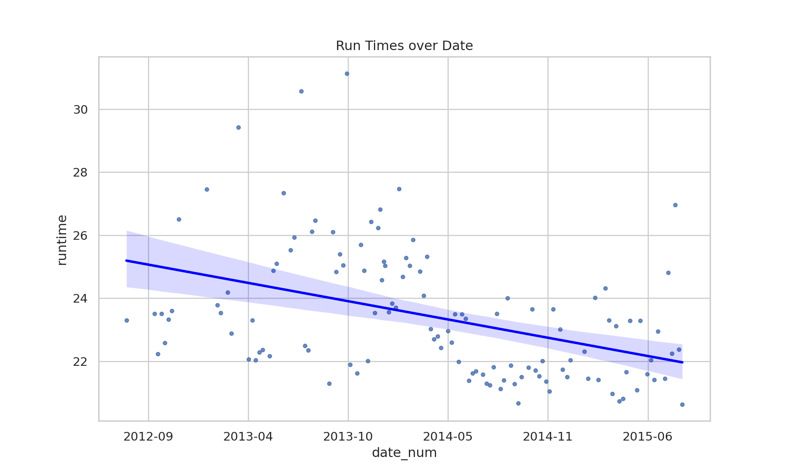
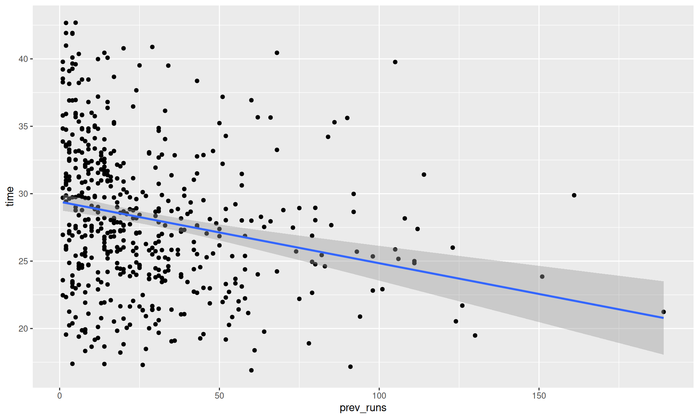
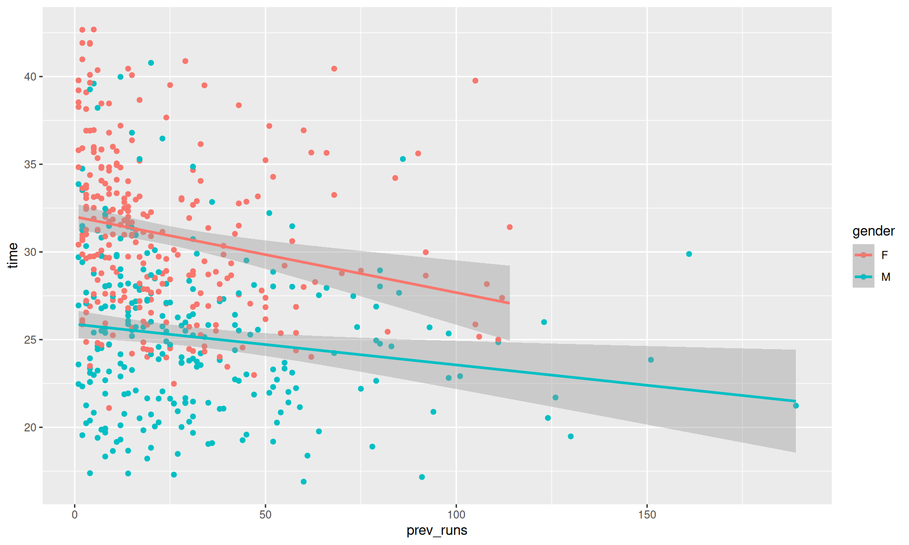
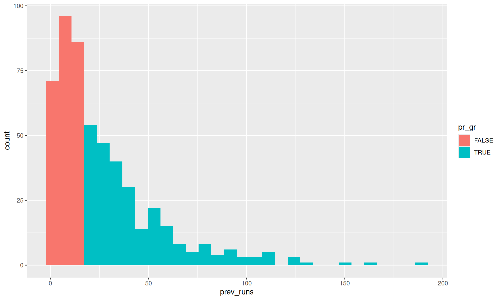
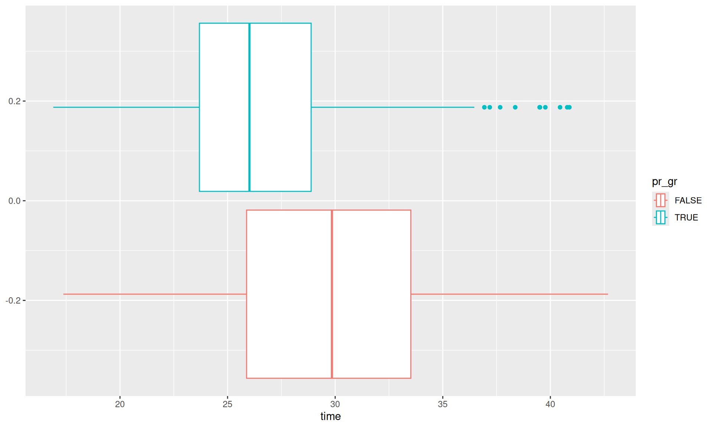

This page presents the worked solutions for the statistics tasks, showing how to perform the same analyses in both R and Python.
WarningBefore you proceed…
These are worked solutions. We strongly recommend attempting to debug the R and Python problem scripts in the Tasks section before reviewing these solutions. Learning to debug is a crucial data science skill!
Task 1: Excel Data Analysis
This task involves reading data from an Excel file (ParkRunPerformanceData.xlsx), cleaning it, calculating summaries, and visualizing the distribution of run times.
# Loading the necessary librarieslibrary(tidyverse)library(readxl)# Assigning the path to a variablepath_to_file <-"../00_data/ParkRunPerformanceData.xlsx"# Corrected path# Reading data from an Excel filedata <-read_excel(path = path_to_file,sheet ="Sheet1",col_types =c("date", "numeric"))# Exploring the datacat("---\n--- Head of Data ---\n---")
tibble [120 × 2] (S3: tbl_df/tbl/data.frame)
$ Event Date : POSIXct[1:120], format: "2015-08-22" "2015-08-15" ...
$ Run Time (minutes): num [1:120] 20.6 22.4 27 22.2 24.8 ...
Code
cat("\n--- Summary Statistics ---")
--- Summary Statistics ---
Code
summary(data)
Event Date Run Time (minutes)
Min. :2012-08-04 00:00:00 Min. :20.63
1st Qu.:2013-09-07 00:00:00 1st Qu.:21.78
Median :2014-04-08 12:00:00 Median :23.07
Mean :2014-04-07 21:48:00 Mean :23.42
3rd Qu.:2014-11-23 18:00:00 3rd Qu.:24.82
Max. :2015-08-22 00:00:00 Max. :31.13
Code
# Rename the columns to ensure consistency and ease manipulationnames(data) <-c("date","runtime")# Sorting the datadata_sorted <- data |>arrange(runtime)cat("\n--- Sorted Data (Ascending) ---")
# Rounding the run times to the nearest minutedata_rounded <- data |>mutate(runtime_mins =round(x = runtime, digits =0))cat("\n--- Data with Rounded Runtimes ---")
# A quick histogramhist(data_rounded$runtime_mins,breaks =14:33, main ="Quick Histogram of Run Times")

Various Outputs from Excel Task (R)
Code
# A nicer histogramdata |>ggplot(aes(x = runtime))+geom_histogram(binwidth =1, col ="white",fill ="steelblue", alpha =0.7)+labs (x ="Run time in seconds",y ="frequency",title ="Park Run Times Distribution",subtitle ="Records from Aug 2012 to Aug 2015",caption ="Source: Andrew Tomlinson")+scale_x_continuous(breaks =14:33)+geom_hline(yintercept =0,linewidth =1,col ="grey30")+theme_minimal()+theme(title =element_text(size =15))

Various Outputs from Excel Task (R)
Code
# Have the run times improved?# A different explorationdata |>ggplot(aes(x = date, y = runtime))+geom_point() +geom_smooth(method ="lm")

Various Outputs from Excel Task (R)
Code
import polars as plimport pandas as pdimport seaborn as snsimport matplotlib.pyplot as pltimport matplotlib.dates as mdatessns.set_theme(style="whitegrid")# Assigning the path to a variablepath_to_file ="../00_data/ParkRunPerformanceData.xlsx"# Corrected path# Reading data from an Excel filedata = pl.from_pandas(pd.read_excel(path_to_file, sheet_name="Sheet1"))# Exploring the dataprint("---\n--- Head of Data ---\n---")
# Rename the columnsiflen(data.columns) >=2: data = data.rename({data.columns[0]: "date", data.columns[1]: "runtime"})# Sorting the datadata_sorted = data.sort("runtime")print("\n--- Sorted Data (Ascending) ---")
# Rounding the run timesdata_rounded = data.with_columns( pl.col("runtime").round(0).alias("runtime_mins"))print("\n--- Data with Rounded Runtimes ---")
# Nicer Histogramplt.figure(figsize=(10, 6))sns.histplot( data=data_rounded.to_pandas(), x="runtime", binwidth=1, color="steelblue", edgecolor="white", alpha=0.7)plt.title("Park Run Times Distribution\nRecords from Aug 2012 to Aug 2015", fontsize=15)plt.xlabel("Run time in seconds")plt.ylabel("frequency")plt.xlim(14, 33)
# Have the run times improved?plt.figure(figsize=(10, 6))pdf = data.to_pandas()# Ensure date is numeric for regression plotpdf['date_num'] = mdates.date2num(pdf['date'])sns.regplot( data=pdf, x='date_num', y="runtime", scatter_kws={'s':10}, line_kws={'color':'blue'})# Fix x-axis to show datesax = plt.gca()ax.xaxis.set_major_formatter(mdates.DateFormatter('%Y-%m'))plt.title("Run Times over Date")plt.show() # Uncommented

Various Outputs from Excel Task (Python)
Task 2: SPSS Data Analysis
This task analyzes running data originally handled in SPSS (RunningData.xlsx), including filtering, grouping, and statistical tests.
Welch Two Sample t-test
data: times_male_adults and times_female_adults
t = -14.636, df = 521.03, p-value < 2.2e-16
alternative hypothesis: true difference in means is not equal to 0
95 percent confidence interval:
-6.622564 -5.055101
sample estimates:
mean of x mean of y
25.15512 30.99395
Code
# Previous runs vs timesdata_adults |>ggplot(aes(x = prev_runs, y = time))+geom_point()+geom_smooth(method ="lm")

Various Outputs from SPSS Task (R)
Code
data_adults |>ggplot(aes(x = prev_runs, y =time, col = gender))+geom_point() +geom_smooth(method ="lm")

Various Outputs from SPSS Task (R)
Code
cat("\n--- Correlation Test (Time vs Previous Runs) ---")
--- Correlation Test (Time vs Previous Runs) ---
Code
cor.test(data_adults$time, data_adults$prev_runs)
Pearson's product-moment correlation
data: data_adults$time and data_adults$prev_runs
t = -5.4024, df = 522, p-value = 1.001e-07
alternative hypothesis: true correlation is not equal to 0
95 percent confidence interval:
-0.3096642 -0.1473580
sample estimates:
cor
-0.2301107
Code
# Finding the median of prev runsmedian_prev_runs <-median(data_adults$prev_runs)cat("\n--- Median Previous Runs ---")
--- Median Previous Runs ---
Code
print(median_prev_runs)
[1] 18
Code
data_adults_pr_gr <- data_adults |>mutate(pr_gr = prev_runs>=median_prev_runs)cat("\n--- Data with pr_gr group ---")
--- Data with pr_gr group ---
Code
print(head(data_adults_pr_gr))
# A tibble: 6 × 6
position time age_cat gender prev_runs pr_gr
<dbl> <dbl> <chr> <chr> <dbl> <lgl>
1 1 16.9 30-34 M 60 TRUE
2 2 17.2 20-24 M 91 TRUE
3 3 17.3 25-29 M 26 TRUE
4 4 17.4 40-44 M 14 FALSE
5 5 17.4 40-44 M 4 FALSE
6 7 18.2 35-39 M 19 TRUE
Code
# a quick visual checkdata_adults_pr_gr |>ggplot(aes(prev_runs,fill = pr_gr))+geom_histogram()

Various Outputs from SPSS Task (R)
Code
# Comparing timesdata_adults_pr_gr |>ggplot(aes(x = time, col = pr_gr))+geom_boxplot()

Various Outputs from SPSS Task (R)
Code
# Linear Model# Extract first two digits of age category for numeric age proxydata_adults_lm <- data_adults |>mutate(age =str_extract(age_cat, '^\\d{2}') |>as.numeric()) my_linear_model <-lm(formula ="time ~ age + gender + prev_runs", data = data_adults_lm) cat("\n--- Linear Model Summary ---")
--- Linear Model Summary ---
Code
summary(my_linear_model)
Call:
lm(formula = "time ~ age + gender + prev_runs", data = data_adults_lm)
Residuals:
Min 1Q Median 3Q Max
-10.3003 -3.3456 -0.3801 2.5654 15.2136
Coefficients:
Estimate Std. Error t value Pr(>|t|)
(Intercept) 30.198335 0.723994 41.711 < 2e-16 ***
age 0.043466 0.018523 2.347 0.0193 *
genderM -5.657628 0.395852 -14.292 < 2e-16 ***
prev_runs -0.035480 0.007473 -4.748 2.66e-06 ***
---
Signif. codes: 0 '***' 0.001 '**' 0.01 '*' 0.05 '.' 0.1 ' ' 1
Residual standard error: 4.473 on 520 degrees of freedom
Multiple R-squared: 0.322, Adjusted R-squared: 0.3181
F-statistic: 82.31 on 3 and 520 DF, p-value: < 2.2e-16
Code
import polars as plimport pandas as pdimport seaborn as snsimport matplotlib.pyplot as pltimport scipy.stats as statsimport statsmodels.formula.api as smfimport numpy as npsns.set_theme(style="whitegrid")path_to_file ="../00_data/RunningData.xlsx"data = pl.from_pandas(pd.read_excel(path_to_file, sheet_name="Sheet1"))# Rename columnsiflen(data.columns) >=5: data = data.rename({ data.columns[0]: "position", data.columns[1]: "time", data.columns[2]: "age_cat", data.columns[3]: "gender", data.columns[4]: "prev_runs" })print("---\n--- Head ---")